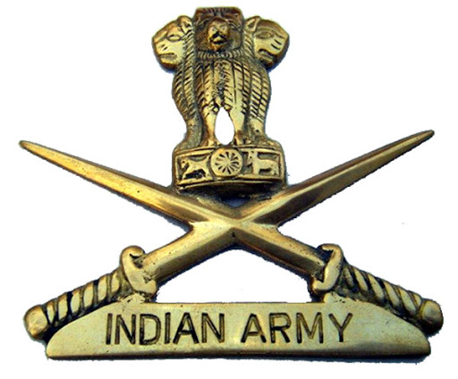

Under ARMY category candidates will have 2 job opportunities
Only male candidates are eligible...
Solider Tradesman
Age : 17.5 - 23 years
Qualifications : 10th / ITI and 8th pass (for some trades).
Solider General Duty
Age : 17.5 - 21 years
Qualifications : 10th pass with 45% & each subject must contain 33%.
For more information Click here

Under NAVY category candidates will have 2 job opportunities
Only male candidates are eligible...
Matric Recruit
The age for Steward, Chef and Sanitary Hygienist candidates should be between 17-20 years on the day of enrolment.
MR Entry (Chef, Steward and Sanitary Hygienist) - Class X Pass from an educational board recognized by Central/State Government.
For more information Click here
Matric Recruit(Musician)
Candidate should have passed Class X (Matriculation Examination) and should have proficiency in Western notation, aural aptitude and basic knowledge in theory of Music. Should also have actual practical skill on any Western classical or Wind/Percussion Instrument.
The age of candidate should be between 17-25 years on the day of enrolment.
For more information Click here

Under AirForce category candidates will have 1 job opportunity
Only male candidates are eligible...
GROUP ‘Y’: Musician Trade
Age : 17.5 - 25 years
Education Qualifications : Passed Matriculation /10th class or equivalent with minimum pass marks from any Government recognised School/Boards and should be proficient in playing at least one of the following musical instruments: Trumpet / Bass / Violin / Saxophone / Clarinet / Euphonium / Jazz-Drum / Piccolo / Bass Trombone / Key Board / Guitar / Sarod / Viola / Cello / Contra Bass (String Bass).
Specified Physical and Visual Standards are applied.
For more information Click here